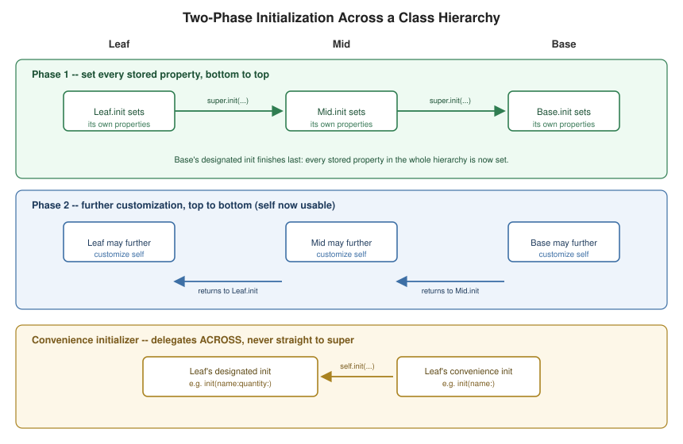

Initialization and Deinitialization
|
This content was generated with the assistance of AI and should be verified against the official documentation before being relied on in production. |
Initialization is the process of preparing an instance of a class, structure, or enumeration for use: setting an initial value for every stored property and running any other setup needed before the instance is used. Deinitialization is its counterpart on classes only, running just before an instance is deallocated.
Setting Initial Values, Initializer Parameters and Labels
struct Celsius {
var temperatureInCelsius: Double
init() {
temperatureInCelsius = 0 // every stored property must have a value by the time init returns
}
init(fromFahrenheit fahrenheit: Double) { // an argument label distinct from the parameter name
temperatureInCelsius = (fahrenheit - 32.0) / 1.8
}
init(_ celsius: Double) { // `_` suppresses the argument label entirely
temperatureInCelsius = celsius
}
}
let boilingPoint = Celsius(fromFahrenheit: 212.0)
let freezingPoint = Celsius(0.0)An init declaration looks like a method with no func keyword and no return type; like any function or method,
each parameter can have both an argument label and a distinct parameter name, or _ to suppress the label at the
call site. Every stored property that isn’t given a default value in its declaration must be set inside every
initializer, in some order, before the initializer returns (or, for a class, before it delegates up to its
superclass — see Two-Phase Initialization below).
Optional Properties and Constants During Initialization
class SurveyQuestion {
let text: String // a `let` property: may be set during init, never again afterward
var response: String? // an Optional property needs no explicit initial value: it defaults to nil
init(text: String) {
self.text = text
}
func ask() -> String { text }
}
let question = SurveyQuestion(text: "Do you like Swift?")
print(question.ask())
question.response = "Yes, I do like Swift!" // fine even though `text` is a `let` -- only `response` is mutableA property typed as an Optional automatically starts as nil and needs no explicit initial value, since nil
is a valid, fully-initialized value for it. A let property may be assigned exactly once during initialization — by the initializer that first sets it — and is fixed for the rest of the instance’s lifetime afterward (a
subclass initializer may not modify a let property it inherited, even before super.init returns, unless it is
the class that originally declared it).
Default and Memberwise Initializers; Initializer Delegation for Value Types
struct Size { var width = 0.0, height = 0.0 } // both properties have defaults
let defaultSize = Size() // the synthesized default initializer
let sized = Size(width: 2.0, height: 2.0) // the synthesized memberwise initializer
struct Point { var x = 0.0, y = 0.0 }
struct Rect {
var origin = Point()
var size = Size()
init() {} // uses the property defaults above
init(origin: Point, size: Size) {
self.origin = origin
self.size = size
}
init(center: Point, size: Size) {
let originX = center.x - size.width / 2
let originY = center.y - size.height / 2
self.init(origin: Point(x: originX, y: originY), size: size) // delegates sideways to another init on Self
}
}A structure or enumeration with no custom initializers of its own receives a compiler-synthesized default
initializer whenever every stored property has a default value; a structure additionally receives a memberwise
initializer, with one labeled parameter per stored property, whenever it declares no initializer at all (see
Structures and Classes). Once any custom
initializer is written, as Rect shows, the synthesized ones are no longer generated automatically — but one
value-type initializer may call self.init(...) to delegate to another initializer on the very same type,
avoiding repeating setup logic.
Designated vs. Convenience Initializers

class Food {
var name: String
init(name: String) { // the designated initializer: fully sets up this class's own storage
self.name = name
}
convenience init() { // a convenience initializer: must delegate across, never straight to super
self.init(name: "[Unnamed]")
}
}
class RecipeIngredient: Food {
var quantity: Int
init(name: String, quantity: Int) { // designated: sets this class's storage, then delegates UP
self.quantity = quantity
super.init(name: name)
}
override convenience init(name: String) { // convenience, overriding an inherited convenience initializer
self.init(name: name, quantity: 1) // delegates ACROSS to this class's own designated initializer
}
}
let oneMysteryItem = RecipeIngredient()
let oneBacon = RecipeIngredient(name: "Bacon")
let sixEggs = RecipeIngredient(name: "Eggs", quantity: 6)A designated initializer is a class’s primary initializer: it sets every property that class introduces and
then calls a designated initializer on its immediate superclass (or is the class’s only initializer, if it’s a
base class). A convenience initializer, marked convenience, is a secondary, supporting initializer that must
ultimately delegate across to a designated initializer on the same class, rather than delegating up to a
superclass directly — convenience initializers exist to provide shortcuts through a designated initializer’s full
parameter list, not a second, independent path to fully initializing an instance.
Two-Phase Initialization and Safety Checks
Every class initializer performs its work in two phases. Phase 1 runs bottom-up: each designated initializer,
starting with the one actually called, sets its own class’s stored properties, then delegates up to its
superclass’s designated initializer, which does the same, all the way to the base class — only once the base
class’s own properties are set does phase 1 complete and every stored property in the whole hierarchy have an
initial value. Phase 2 then runs top-down: each initializer, now able to safely use self (call methods, read
and write properties, refer to self as a value), gets a chance to further customize the instance before it’s
handed back to the caller, from the base class’s initializer down to the one the caller actually invoked.
The compiler enforces four safety checks that make this ordering sound: a designated initializer must set all of
its class’s own properties before delegating up; a designated initializer must delegate up before assigning a
value to an inherited property (assigning to an inherited property first, then delegating, would let the
superclass initializer overwrite it); a convenience initializer must delegate across before assigning to any
property, inherited or its own; and no initializer may call an instance method, read an instance property, or
refer to self as a value until after phase 1 has completed for the whole hierarchy.
Initializer Inheritance, Overriding, and required
class SomeClass {
required init() {} // every subclass must provide its own (possibly inherited) implementation of this
}
class SomeSubclass: SomeClass {
required init() {} // `required` is repeated (without `override`) to keep the requirement propagating
}Unlike methods, a subclass does not inherit its superclass’s initializers by default — this prevents a subclass
that adds new, non-optional stored properties from being reachable through an inherited initializer that never
sets them. A subclass automatically does inherit all of its superclass’s designated initializers if it
overrides none of them itself, and automatically inherits all of the superclass’s convenience initializers if it
provides overrides for every one of the superclass’s designated initializers (matching the same override rules as
any other member, using override). Marking a designated initializer required forces every subclass, direct or
indirect, to provide its own implementation of it (inherited automatically if the subclass adds none of its own
designated initializers) — typically used when generic or protocol-oriented code needs to be able to construct
Self regardless of which concrete subclass it holds.
Failable Initializers (init?, init!) and Enums with Raw Values
struct Animal {
let species: String
init?(species: String) { // `init?`: initialization can fail and return nil instead of an instance
if species.isEmpty { return nil }
self.species = species
}
}
let anonymous = Animal(species: "") // nil -- the empty string fails validation
let giraffe = Animal(species: "Giraffe") // an Animal?, non-nil
enum TemperatureUnit: Character {
case kelvin = "K", celsius = "C", fahrenheit = "F"
}
let unit = TemperatureUnit(rawValue: "F") // enums with raw values get a synthesized `init?(rawValue:)` for freeinit? returns an Optional instance, nil-ing out via a bare return nil at any point when the arguments fail
validation; init! behaves the same way but produces an implicitly-unwrapped optional instance. A failable
initializer can delegate to (and be delegated to by) a non-failable one; a non-failable initializer can not
call a failable one without unwrapping its result first. An enumeration with raw values (see
Enumerations) automatically receives a synthesized
init?(rawValue:), returning nil when no case has the given raw value.
Setting Defaults with Closures and Functions
struct Checkerboard {
let boardColors: [Bool] = { // an immediately-invoked closure computes the default
var colors: [Bool] = []
for row in 0..<8 {
for column in 0..<8 {
colors.append((row + column) % 2 == 0)
}
}
return colors
}() // the trailing `()` calls the closure right away
}A stored property’s default value can be computed by a closure or function called immediately: the closure runs
once, at the point the instance is initialized, with the trailing () invoking it there and then (omitting the
parentheses would instead store the closure itself as the property’s value, which is never what’s wanted here).
This is useful whenever a default requires more than a single expression to compute, without needing a full custom
initializer just to set it.
Deinitialization (deinit)
class TemporaryFile {
let path: String
init(path: String) {
self.path = path
print("opened \(path)")
}
deinit {
print("closing and removing \(path)") // runs automatically, right before the instance is deallocated
}
}
var file: TemporaryFile? = TemporaryFile(path: "/tmp/scratch")
file = nil // "closing and removing /tmp/scratch" prints here, once nothing else references the instanceOnly classes may declare a deinit, with no parentheses and no parameters, and a class may declare at most one.
Swift calls it automatically, exactly once, immediately before an instance’s memory is deallocated — typically
used to release a resource (a file handle, a network connection) the instance was managing, and never called
directly. A subclass’s deinit runs before its superclass’s, and the superclass’s deinit always runs even if
the subclass provides none of its own; how (and when) an instance actually reaches zero references in the first
place is covered in
Automatic Reference Counting. A noncopyable
struct (~Copyable) can also declare deinit, for the same reason: see
Structures and Classes.
Worked Example: Building and Tearing Down Library Items
Initialization is where Swift’s safety guarantee is made concrete: no instance can be used before every stored property has a value. The listing builds the bookshelf’s types with a failable struct initializer, a class hierarchy with designated and convenience initializers, and a struct with initializer delegation, and prints a message from every step so the order is visible.
struct ISBN {
let digits: String
// Failable: returns nil for invalid input instead of building a broken value.
init?(_ raw: String) {
let cleaned = raw.filter(\.isNumber)
guard cleaned.count == 10 || cleaned.count == 13 else { return nil }
digits = cleaned
}
}
class Item {
let title: String
let isbn: ISBN?
// Designated initializer: fully initializes this class's own properties.
init(title: String, isbn: ISBN?) {
self.title = title
self.isbn = isbn
print("Item designated init: \(title)")
}
// Convenience initializer: must delegate across to a designated initializer of the same class.
convenience init(title: String) {
self.init(title: title, isbn: nil)
print("Item convenience init")
}
deinit { print("deinit \(title)") }
}
class Book: Item {
let pages: Int
// A subclass designated initializer: own properties, then super.init.
init(title: String, isbn: ISBN?, pages: Int) {
self.pages = pages
super.init(title: title, isbn: isbn)
}
// Overriding an inherited designated init keeps the class's initializers consistent.
override init(title: String, isbn: ISBN?) {
self.pages = 0
super.init(title: title, isbn: isbn)
}
// The inherited convenience init(title:) is available because Book overrides ALL designated inits of Item.
}
// Default values, memberwise init, and delegation in a struct.
struct Loan {
var days = 14
var renewals = 0
var reader: String
init(reader: String) { self.reader = reader }
init(reader: String, extended: Bool) {
self.init(reader: reader) // delegation: struct initializers use self.init
if extended { days = 28 }
}
}
print(ISBN("978-0-306-40615-7")?.digits ?? "invalid")
print(ISBN("12345")?.digits ?? "invalid")
do {
let a = Item(title: "Pamphlet")
let b = Book(title: "Emma", isbn: ISBN("0-14-143951-3"), pages: 474)
let c = Book(title: "Kim") // inherited convenience initializer
print(a.isbn == nil, b.pages, c.pages, Loan(reader: "Ada", extended: true).days)
}
print("scope ended")9780306406157
invalid
Item designated init: Pamphlet
Item convenience init
Item designated init: Emma
Item designated init: Kim
Item convenience init
true 474 0 28
deinit Kim
deinit Emma
deinit Pamphlet
scope ended-
Failable initializers return an optional.
ISBN("12345")isnil, so the caller must decide what an invalid ISBN means; the type itself can never hold one. This is the idiomatic way to make illegal states unrepresentable. -
Designated versus convenience. The designated initializer sets the stored properties and calls up the chain; the convenience one only delegates across to a designated initializer of its own class (
Item convenience initprints after the designated one completes). -
Inheritance of initializers is conditional.
Book(title: "Kim")works only becauseBookoverrides every designated initializer ofItem, which makesItem's convenience initializers inherited. Remove theoverride init(title:isbn:)and the call stops compiling. -
Struct initializers delegate with
self.init, and a struct that declares its own initializer in the type body loses the synthesised memberwise one (henceLoandeclares exactly what it supports). -
Deinit runs when the last reference goes. At the end of the
doblock the output showsKim,Emma,Pamphlet; the language does not promise an order for locals, because the optimizer may release a value right after its last use, so never rely on it.
The Safety Checks the Compiler Runs
-
A designated initializer must initialise all properties introduced by its own class before it calls
super.init. -
It must call a superclass designated initializer before assigning to an inherited property.
-
A convenience initializer must call another initializer of the same class before assigning to any property.
-
selfcannot be used (no method calls, no reading properties) until phase 1 is complete.
Pitfalls
-
Properties with default values (
var days = 14) are initialised before any initializer body runs, so they can be used at the start of the body. -
A
required initforces every subclass to provide that initializer; protocols that demand aninitalso needrequiredin non-final classes. -
A failable initializer in a class may return
nilbefore all properties are set (since Swift 2.2). -
Keep initializers free of calls to overridable methods: after phase 1 they may run a subclass override that depends on state its own initializer has not set yet.
See Also
-
Structures and Classes — default and memberwise initializers, and why only structs get the latter.
-
Inheritance —
super, overriding, and the class hierarchy designated/convenience initializers delegate across. -
Enumerations — raw values and
init?(rawValue:). -
Automatic Reference Counting — when an instance actually becomes eligible for deinitialization.
-
Properties —
lazyproperties, whose initial value is deferred past initialization entirely.